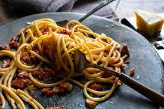

Bucatini all'Amatriciana

Description
Another recipe I've gently lifted from the paper of record's cooking arm. This one is really wonderful- I've only made it once, but it went over well. A salty dish- You're taking pancetta or prosciutto - salty meats - and there will be more salt added.
It's important you get a block of your meat from the butcher, rather than sliced prosciutto (how it normally comes). I was lucky enough, that the provider I went to, gave me a new hunk after not requesting properly the first time!
Ingredients
- half pound unsliced pancetta or prosciutto
- 3 tbsp olive oil
- one red onion, coarsely chopped
- pound a half canned tomatoes
- half tsp red pepper flakes
- salt & pep
- a pound of dried Bucatini
- half cup pecorino or Parmesan
Steps
- cut the meat into chunks less than one half inch thick
- fry them in a saucepan with the olive oil over low heat for 15 minutes
- watch to make sure the fat is rendered out, and the meat is crisp
- remove and set aside
- saute the onion over medium for 5 minutes
- drain and chop the tomatoes, and add to the pan
- season with red pepper flakes & S&P, simmer 20 minutes stirring occasionally
- meanwhile, bring salted pot of water to a boil & cook bucatini according to package
- transfer sauce to skillet over medium-high heat
- add pasta and meat and cook for 30 seconds
- remove from heat, add cheese, then divide and serve